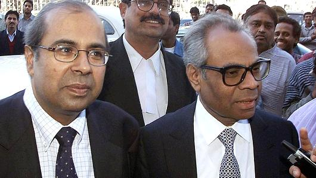

Source: Phillips in Association with Bacs and Russo The “Bao Dai” is the most expensive
Rolex ever auctioned.
A vintage Rolex wristwatch sold at Phillips in Geneva for $5,060,427, becoming the most expensive Rolex ever auctioned. The watch, a 1952 reference 6062 called the "Bao Dai," led a record-high watch sale by Phillips on May 13 and 14 that totaled
$32.6 million, the highest result ever in the history of watch auctions. The Bao Dai is named after its former owner, the last emperor of Vietnam, who purchased the timepiece in Geneva during peace negotiations in 1954.

A pair of fancy colored diamond earrings sold for a whopping $57.4 million at auction Tuesday, setting a new record. The pear-shaped earrings were being auctioned separately by Sotheby's, however, they were sold to a single, anonymous buyer. The
buyer snatched up "The Apollo Blue" earring for $42.1 million, and "The Artemis Pink" diamond for $15.3 million. Combined, the pair set a record for the most expensive earrings ever sold at auction. The prior record was held by the Miroir de
l'Amour earrings sold by Christie's last year for $17.6 million. The Apollo stone is a 14.54-carat blue diamond, while the nearly identical Artemis stone is a 16-carat pink diamond. The auction house had estimated that the pink diamond would
sell for between $12.5 million and $18 million, while the blue stone would go for between $38 million and $50 million. Sotheby's said demand for colored diamonds remains strong. This spring the auction house broke the world record for the most
expensive diamond ever sold at auction with the $71.2 million sale of the "Pink Star" diamond. "In the last five to 10 years, the price seems to be escalating rapidly. And we just sold this world record stone, and that was a pink diamond," said
David Bennett, worldwide chairman of Sotheby's International Jewellery division, ahead of the auction. "Certainly people who own important colored diamonds are aware that the market is strong."
Brendan Smialowski | AFP | Getty Images President Donald Trump boards Air Force
One at Lynchburg Regional Airport May 13, 2017 in Lynchburg, Virginia.
President Donald Trump's tax treatment of pass-through income could cost as much as $1.95 trillion over 10 years, according to a new analysis. And more than three-quarters of the cut would go to the wealthy. The Tax Policy Center said that if
Trump's plan to tax pass-through income at 15 percent takes effect, federal tax revenue could drop by $1.36 trillion over a decade. Adding in the amount of income that would "shift" to take advantage of the pass-through rate would raise the
total to $1.95 trillion. Trump's tax proposal calls for cutting the rate for income that "passes through" limited liability companies, sole proprietorships and S-corps to 15 percent, to match the reduction in the corporate tax rate. Yet critics
say the reduction will cause people to turn their ordinary income into pass-through income and get the lower rate than the 35 percent top tax rate proposed by Trump.Pass-through income mainly benefits the wealthy. The Tax Policy Center said
that three-quarters of the benefit from the tax cut would go to the top 1 percent of earners. They would see an average increase in their after-tax income of 4.8 percent, or about $76,000. The very wealthy would see the biggest gains: Those
in the top one-tenth of 1 percent of the income distribution — those with incomes exceeding $3.4 million — would receive an average tax cut of almost $638,000. By contrast, fewer than 5 percent of households in the middle quintile of the income
distribution would see a reduction, averaging about $370. "Lowering the tax rate on pass-through income would affect few taxpayers in the middle or bottom of the income distribution but provide large tax reductions to a relatively small number
of households at the top of the income distribution," the Tax Policy Center said.
Sales of $100 million homes hit a record last year, although a growing number are piling up unsold in 2017, according to a new report. There were 10 homes sold last year for $100 million or more, according to new report from Christie's International
Real Estate. That was twice the previous record of five sales in 2014. The total value of nine-figure homes sold last year topped $1.4 billion. Granted $100 million homes represent a small market that can move on just a handful of deals. Yet
Christie's International Real Estate CEO Dan Conn said prices for super-homes are simply catching up to soaring values in other parts of the wealthy economy — from $300 million yachts to $100 million Picasso paintings. There were 34 sales last
year of homes priced at $50 million or more, nearly twice the previous year, according to the report. "I think homes are just catching up with the rest of the luxury world," Conn said. "These homes are stores of value and they have proven over
time to have a positive return without the kinds of volatility you get in equity markets." Half of the 10 homes that sold last year for nine figures were in Hong Kong, which has become a favorite location for wealthy Chinese. The most expensive
was a single-family home on Gough Hill Road on The Peak in Hong Kong that sold for $270 million. A home in Suzhou in China was second, at $150 million, while a home in Hong Kong's Stanley area ranked third at $131 million. There were three nine-figure
properties that sold last year in the U.S. The Lily Pond Estate in East Hampton, New York, sold for $110 million, while two properties in the affluent western Los Angeles neighborhood Holmby Hills hit the nine-figure mark. The first was The
Playboy Mansion, which sold for $105 million, and the second was a newly built home, called "Mon Reve," that went for $100 million. Yet more and more $100 million homes are piling up unsold. There are now 34 homes publicly listed for $100 million
or more around the world, compared with 19 last year. If you count homes that are "pocket listings," or not officially on the market but are being quietly shopped around, the number grows to around 50 or more, Conn said. Discounts are also growing
at the very top. The average discount for homes priced at $30 million was 18 percent in 2015, but rose to 25 percent last year, according to the report. So far this year, only two homes have sold for $100 million or more. An apartment building
on The Peak in Hong Kong was sold for $360.6 million. The owner plans to tear down the building to build a single-family home — so it's not only one of the most expensive homes ever sold, but it's believed to be the most expensive tear-down
ever sold. The second home that sold for nine figures was also on The Peak — a $139 million single-family home. Conn said that while this year could revert closer to the mean of nine-figure home sales — at four or five a year — he said the super-home
market still has room to grow. The total value of the 34 super-homes on the market is $6.36 billion That's less than one-tenth of 1 percent of the total wealth of the world's billionaires, he said. "You could argue that they are underallocated
in terms of homes," he said. A growing number of the $100 million listings are spec homes, or newly built homes built on "speculation" by a builder to sell. The two most expensive are a $500 million home being built by Nile Niami in Bel Air,
California, and a $250 million Bel Air mansion that's finished and is being sold by fashion tycoon Bruce Makowsky. Conn said he expects a home will eventually sell for $1 billion – but it's unclear how long that will take. There is already one
on the market — Villa Leopolda (also known as Villa Les Cedres) in Saint-Jean-Cap-Ferrat, France, that was once the home to Belgium's King Leopold II. The property has 35 acres of manicured grounds overlooking the ocean, and is on the market
for $1.1 billion.
Getty Images Masterpieces by Modigliani and Picasso unveiled at Sotheby's on June 16, 2016 in London.
(L-R) Modigliani's "Jeanne Hebuterne (au foulard)," 1919 and Picasso's "Femme assise,"
1909 were auctioned as part of the Impressionist
and Modern Art Evening sale.
Conventional wisdom holds that the art market is highly cyclical and moves with stock markets. But recent comments from Sotheby's CEO Tad Smith suggest that fine art prices have room to grow — and may be in for a structural (rather than cyclical)
surge. Sotheby's looked at the wealth of today's billionaires and compared it to the most expensive works of art sold. To do this, Sotheby's used the 201st richest American on the Forbes 400 to get a median wealth level. In 2006, the 201st on
the list would have had to spend 10 percent of their wealth to buy the most expensive piece of art sold that year. In 2016, that same number was only around 5 percent. In 2006, the 201st wealthiest person would have had to spend 70 percent of
their fortune to buy all of the top 10 pieces of art sold at auction that year. In 2016, that same number was 40 percent. "In other words, the median member of the Forbes 400 would have seen his personal spending power to purchase art at auction
grow 75 percent in the past decade alone," Smith said. Granted, not every billionaire collects art, and even the most avid collectors aren't likely to spend 10 percent of their wealth on a painting. And billionaire fortunes aren't that liquid
— most are in the form of operating businesses rather than cash that can be handed over to Sotheby's. Yet, the numbers counter the perception that art prices have soared beyond the reach or rationale of even the wealthiest buyers. There are
not only more billionaires in the world than ever — more than 2,000 — but their fortunes have grown far more rapidly than art prices. And that could make today's most expensive art look relatively cheap in the future.

AFP | Getty Images British-based brothers Srichand Hinduja (R) and Prakash Hinduja (L) arrive at a New Delhi court in 2001.
Brexit may have been good for the British wealthy — especially billionaires. The U.K. added 14 new billionaires last year, bringing the total to a record 134, according to the Sunday Times Rich List. The Times said London has the most billionaires
of any city, with 86. (According to Forbes' tally, New York has 82). "While many of us are worried about the outcome of the E.U. referendum, many of Britain's richest people just kept calm and carried on making billions," Robert Watts, the list's
compiler, told The Guardian. The richest family in Britain is actually a duo — brothers Srichand and Gopichand Hinduja, who own the Hinduja Group conglomerate. The Times pegs their net worth at 16.2 million pounds, or around $21 billion. They
live in a $390 million mansion overlooking St. James's Park. Len Blavatnik, a Ukrainian-born U.S. businessman, ranked second with a fortune of 15.98 billion pounds, or $20.7 billion. The youngest rich Briton on the list is the Duke of Westminster,
who at 26 has a net worth of 9.5 billion pounds, or $12.3 billion. Ranking third was another pair of brothers, David and Simon Reuben. The Mumbai-born brothers, who made much for their fortune from property, have a net worth of 14 billion pounds,
or around $18 billion.